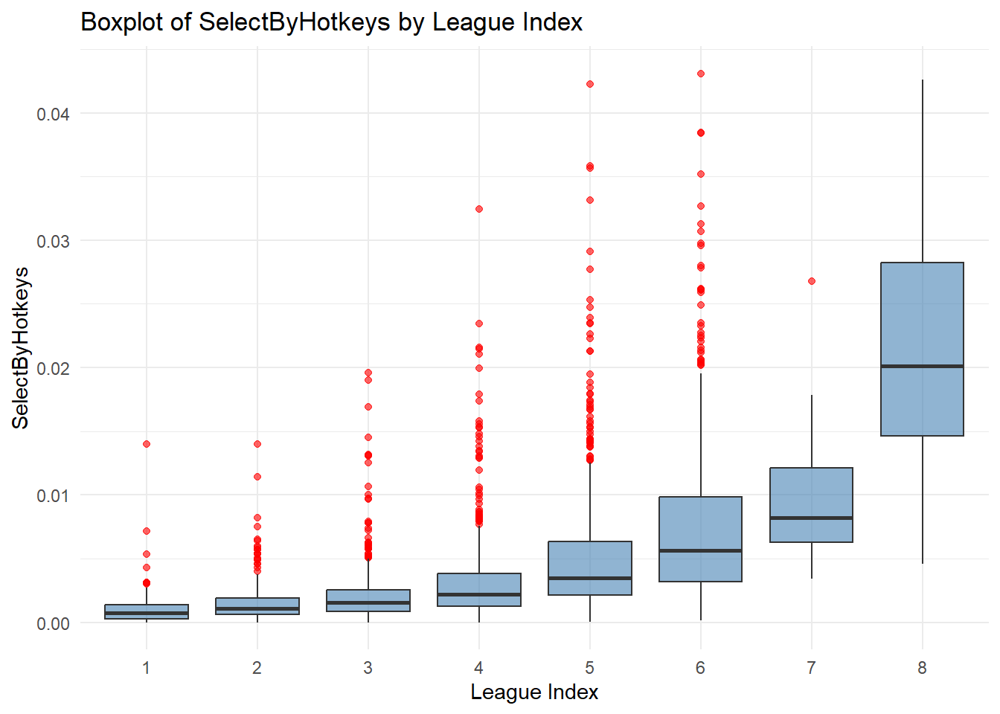
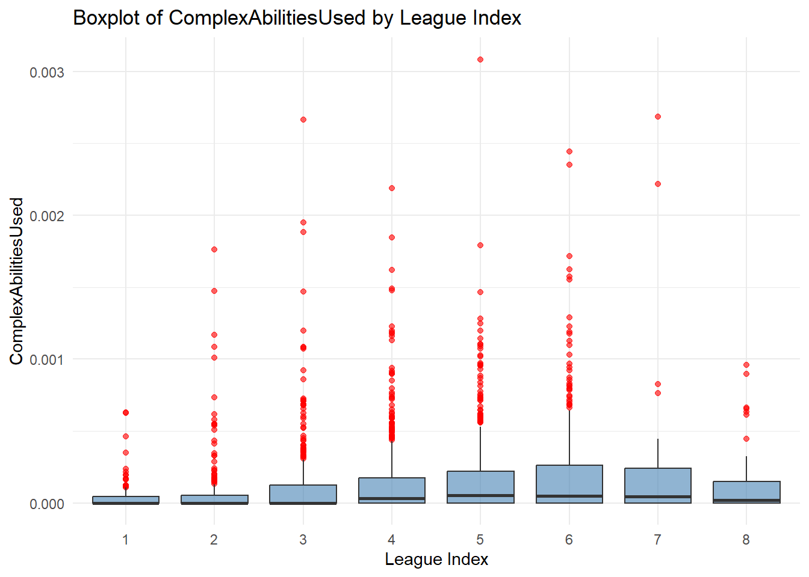
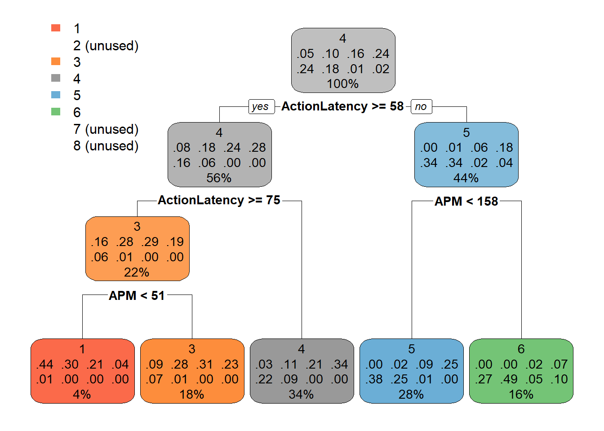

This report intends to analyze what factors contribute to or are predictive of high level Starcraft 2 play. In general The report will attempt to predict the “LeagueIndex” using statistics from a game replay. The statistics that are highly predictive of higher “LeagueIndex” are likely statistics that are worth training and improving as skills that improve your rank.
Exploratory Data Analysis
To start, the LeagueIndex column is our response variable. This value ranges from 1-8 and we will be attempting to use classification modeling to identify the most valuable predictors. The 1-8 value represents “Bronze, Silver, Gold, Platinum, Diamond, Master, GrandMaster, and Professional leagues.”
It is rarest to be of LeagueIndex 7. Only 35 observations are GrandMasters (rank 7). This equates to 35/3395=0.01030928, so ~1% of the observations. This should be fair grounds for stratifying the dataset during the data splitting.
The dataset has been split into train and test by an 80/20 split. It is stratified using our response LeagueIndex so that both train and test have a proportional amount of each LeagueIndex rank. The train set is then split into 10 training folds to be used for cross validation later.
Immediately here, it must be noted that the SelectByHotkeys, AssignToHotkeys, MinimapAttacks, MinimapRightClicks, NumberOfPACs, GapBetweenPACs, WorkersMade, ComplexUnitsMade, and ComplexAbilitiesUsed are all columns generally composed of decimals less than 0.001. Some of those columns are generally less than 0.0001. This is because these columns are statistics measured by timestep. This means that these statistics take the game length into account, which is good in terms of predictive value. In longer games, a player should have more workers made, so the WorkersMade statistic is workers made per timestep rather than just workers made during a game. The thing to consider here is if the small numeric values will cause any problems or be underrepresented in the modeling process. Distance based modeling techniques like Support Vector Machines and K Nearest Neighbors certainly need scaled data, but these columns are not small enough that they would cause issues outside of that.
All the data is numeric and complete, so neither imputation nor dummy variables are necessary.
Plotting Predictors Against Response
graphData <- train %>%mutate(LeagueIndex =as.factor(LeagueIndex)) %>%mutate(TotalHours =ifelse(TotalHours >10000, NA, TotalHours))potential_numeric_predictors <-c("Age","HoursPerWeek","TotalHours","APM","SelectByHotkeys","AssignToHotkeys","UniqueHotkeys","MinimapAttacks", "MinimapRightClicks", "NumberOfPACs","GapBetweenPACs", "ActionLatency", "ActionsInPAC", "TotalMapExplored", "WorkersMade", "UniqueUnitsMade", "ComplexUnitsMade", "ComplexAbilitiesUsed")# Create boxplots for each numeric predictor...the purrr library made it easierplot_list <-map(potential_numeric_predictors, function(var) {ggplot(graphData, aes(x = LeagueIndex, y = .data[[var]])) +geom_boxplot(fill ="steelblue", alpha =0.6, outlier.color ="red") +labs(title =paste("Boxplot of", var, "by League Index"), x ="League Index", y = var) +theme_minimal()})
The purpose of this section is to look at broad relationships between the predictors and the response. So we are simply looking at broad positive or negative relationships. Intuition would tell us that ActionLatency is bad for performance, but this step is double checking things like that.
Extreme outliers existed in TotalHours that were removed for the purpose of graphing. Some entries are certainly troll entries as one claims to have played for 114 years. Most of the entries are automatically gathered data, but the TotalHours must have been done by survey.
Positive Correlation
print(plot_list[4])
[[1]]
print(plot_list[5])
[[1]]
print(plot_list[6])
[[1]]
print(plot_list[7])
[[1]]
print(plot_list[10])
[[1]]
There are 8 potential predictors with clear positive correlation with LeagueIndex. Over half of these predictors, namely APM, SelectByHotKeys, AssignToHotkeys, UniqueHotkeys and NumberOfPACs, have strong, clear and consistent positive linear correlation to LeagueIndex. So these are skills that are consistently correlated with higher level play.
In context, better players have better APM (actions per minute). Better players also use more selection hotkeys. Lastly, better players have more PACs.
A higher APM means you are making more actions. This relates to the speed and efficiency of your play.
The three hotkey predictors are all related to using shortcuts to accomplish tasks. Instead of moving the camera and clicking to select things, better players use a single keyboard key to accomplish the same task. This is also indicative of the speed and efficiency you perform at. It also allows you to be making actions across more of the map than normal. You can only be looking at one area of the map at once, but hotkeys allow you to control things that are not on your screen.
A PAC is a “perception action cycle” that is basically a movement of the camera followed by some number of actions. More PACs means you are doing more things in different places on the map. Broadly it means that you are doing more things in different places at once. You are able to split your attention across the map better if you have more PACs.
Now, any player can simply improve all these stats by panning around the screen and spamming keyboard hotkeys like a madman, but that won’t help them climb the ranks. These are, however, great metrics to track your performance and for looking for areas of improvement. A lacking of any of these statistics likely means a disadvantage. Additionally, these statistics are all very related to the speed or efficiency that a player plays at. This is independent of game knowledge or strategy which are other important factors, but if you want to get better, you need to be able to do things as quickly as your opponent.
print(plot_list[2])
[[1]]
Warning: Removed 47 rows containing non-finite outside the scale range
(`stat_boxplot()`).
print(plot_list[3])
[[1]]
Warning: Removed 52 rows containing non-finite outside the scale range
(`stat_boxplot()`).

print(plot_list[8])
[[1]]
print(plot_list[9])
[[1]]
The other predictors here, namely HoursPerWeek, TotalHours, MinimapAttacks and MinimapRightClicks, they have much smaller changes between lower LeagueIndex values but then jump up towards the higher LeagueIndex Values. So this second group of positive predictors might be able to define the difference between low level and high level play more broadly. Particularly, these predictors see significant increases in LeagueIndex 7 and 8 (the highest two leagues). So the best players use these skills the most.
Unfortunately the dataset seems to not have data for the TotalHours or HoursPerWeek of the players of rank 8 (the highest rank). This might have something to do with how the survey was dispersed.
So we cannot say whether the pattern would continue to rank 8, but there is a significant jump between ranks 5 and 6 in the HoursPerWeek predictor, and a there is a significant jump between ranks 6 and 7 in the TotalHours predictor. One way to interpret this is simply that it requires more and more hours to improve at the game as you get better. It looks like between 0 and ~700 TotalHours might have a very small linear increase between ranks 1-6, but then to get to rank 7 on average requires ~500 additional TotalHours. This is to say that, on average, putting more time in does not directly improve your skill necessarily. There are minor gains with TotalHours, so on average a player will improve the longer they play, but the additional HoursPerWeek seems unhelpful until ranks 6 and 7.
So, if you want to improve playing more should help a bit, but it does not need to be consistent. If you want to compete with the highest ranking players, you may have to dedicate a significant amount of time to play per week. Few people in ranks 6 or 7 play less than ~12 hours per week and most play ~20-30 hours a week.
Minimap attacks and right clicks allow the player to make actions that are off their screens. It means they can be acting in many places on the map at once while looking at only one part of it. It seems like between ranks 1-4, that this metric is not important. These players are likely overwhelmed enough that using these abilities does not help them. MinimapRighClicks increase only slightly until rank 8 where it jumps way up. MinimapAttacks increase only slightly until ranks 7 and 8 where it jumps way up. I would take this to describe these statistics as luxury statistics. Unless a player is gunning for the highest ranks, then these metrics are not terribly important for competing for ranks below 6. It is very possible for a player to climb lower ranks without using these mechanics very much at all.
Negative Correlation
print(plot_list[11])
[[1]]
print(plot_list[12])
[[1]]
The GapBetweenPACs and ActionLatency predictors are strongly, consistently, and negatively correlated to LeagueIndex.
In context, this makes perfect sense. Action Latency is a measure of the mean delay between a screen movement and a new action. It is essentially the average length of PACs (time between moving the camera and then making your first action with the new location). Essentially, it is a delay between seeing new things and then making a decision on what needs to happen. Having a higher Action Latency means that you are taking longer between seeing something and deciding what to do (and usually doing something is better than not in Starcraft 2; things happen automatically, but usually player involvement can improve the outcome).
Action latency is essentially a measure of how quickly you react to things happening on your screen.
And the GapBetweenPACs is a measure of the mean delay between different PACs. This is essentially how long on average you keep the camera in one area. A higher value here means that you don’t move the camera as often (or you move the camera and don’t make actions often). A lower value here means you move the camera and make actions often.
The Gap Between PACs is essentially measuring how often you are moving around the map and making actions in response to new visual information. This measures how much new information you are capable of absorbing and how quickly you absorb it. It also measures how quickly you turn the new information into a retaliatory/responsive action.
Both of these metrics are therefore sensibly and statistically relevant to performance in Starcraft 2. If you want to improve your rank, these are metrics that should be noteworthy to you. You’ll want to minimize both of these metrics by being able to process information faster and make responsive actions faster.
It is perhaps interesting that both the number of PACs and the Gap Between PACs are entries in the dataset. I am unsure if these two metrics carry the same information. One is the total number per game, the other is the average delay between them. There is certainly overlap and the two graphs do look pretty similarly distributed (just oppositely correlated). To improve both of them, you do the same thing as well, you do more PACs.
No/Little Correlation
print(plot_list[1])
[[1]]
Warning: Removed 46 rows containing non-finite outside the scale range
(`stat_boxplot()`).
print(plot_list[13])
[[1]]
print(plot_list[14])
[[1]]
print(plot_list[15])
[[1]]
print(plot_list[16])
[[1]]
print(plot_list[17])
[[1]]
print(plot_list[18])
[[1]]

These last metrics, Age, ActionsInPAC, TotalMapExplored, WorkersMade, UniqueUnitesMade, ComplexUnitsMade, and ComplexAbilitiesUsed, they are all not obviously correlated to LeagueIndex. The age of rank 8 players is also missing like the TotalHours and HoursPerWeek. It is likely related to the survey method.
Starting with age, there does seem to be no real correlation between LeagueIndex and age. Few players in this dataset are over 25 years old and rank 6 and 7 players tend to be younger than 25 (which would explain the more hours per week).
The ActionsInPAC metric is a mean number of actions within a PAC. So, when the player moves the camera, this is a measure of the number of actions they make there before they move the camera again. This too seemed to stay pretty much the same across LeagueIndex. The number of actions you do after moving the camera is largely irrelevant then.
The TotalMapExplored metric is a measure of how much of the map is viewed per timestep. Essentially, this is a measure of how much raw visual information a player is getting on average during the game. There is also no strong correlation here with LeagueIndex. There is perhaps a small positive correlation because having more information is generally good, but it doesn’t really matter how much information you have if your aren’t responding to it quickly. If you get visual information and do not respond, it is like wasting that information and that time, which is why PACs and PAC delays are helpful metrics.
The WorkersMade metric is simply the number of workers made per timestep (so this scales with game length). A higher number means a player makes more workers. There is a small linear correlation between ranks 1-6 before it stagnates for rank 7 and then drops for rank 8. More workers is good generally, but it is sacrificing current resources for later resources which can be harmful. The priority is winning (ending) the game, so creating the minimal number of workers to win the game is optimal. Notably, the highest ranked players have a noticeably lower WorkersMade amount than ranks 5-7 meaning that these players are more optimal with their workers. They are less prone to creating more workers than they need.
The UniqueUnitsMade metric has no obvious correlation to LeagueIndex, but rank 8 players, on average, seem to know what they want more than rank 4-7 players. Ranks 1-3 players eventually learn that all the units have their position in the meta, then rank 5-7 players seem to make use of many of the total units often. Then finally, rank 8 players seem to be more picky about what they use, likely having the most extreme knowledge of the meta and which units are optimal.
Looking at the ComplexUnitsMade metric is the most interesting here because of the extreme loss between ranks 7 and 8. This is potentially only because there are fewer rank 8 players, but it may mean that the highest ranked players create less complex units, or that they simply do not lose the ones they create. Again, there is no clear correlation with LeagueIndex.
All of these metrics have some interesting potential findings, but none of them are greatly predictive of LeagueIndex. This implies that these metrics are not metrics that need to be focused on while improving your skills (though it does perhaps depend on your rank).
Modeling Section
Multiple models will be considered, particularly K Nearest Neighbors, Decision Tree, Random Forest, and XgBoost.
For the KNN model, the “neighbors” hyperparameter is being tuned. All predictors are used to attempt to predict LeagueIndex. GameId is removed because it is not predictive, it is a label. The numeric predictors are normalized so that they have equally weighted votes. This solves the issue of the small values of some predictors. 20 initial hyperparameter combinations are being used and Bayesian Optimization explores the hyperparamter space further to look for even more optimal solutions.
First off, the mean accuracy of all the iterations is around 32% which is not absolutely terrible because there are 8 response categories. It also makes sense that performance metrics are not the ultimate decider of ranked performance. A 30% predictor of rank makes intuitive sense for these metrics because we have no metrics for strategy or game knowledge at all. Any player could pretty easily force their metrics to look very good, but if they aren’t using these skills to do anything productive, they will never win. It would be like being the fastest runner on the football field but never running in the right direction and not knowing the rules of the game.
The best KNN model had an accuracy of ~35.3% using 15 voting neighbors.
For the Decision Tree model, the “tree_depth” and “min_n” hyperparameters are being tuned. All predictors are used to attempt to predict LeagueIndex. GameId is removed because it is not predictive, it is a label. 20 initial hyperparameter combinations are being used and Bayesian Optimization explores the hyperparamter space further to look for even more optimal solutions.
The accuracy of all the decision trees are largely around ~35%. This accuracy is very similar to the result of the KNN model which is perhaps worrying especially because I see very similar accuracy results in many of these decision trees. This is perhaps worrying because it is possible that the models are selecting a single or few categories exclusively because the categories are skewed. The best performing decision tree will be fit and plotted to check on this.
The fit was successful and will be used with test data at the end of the report.
Plotting Best Decision Tree
rpart.plot(dtBestFit %>%extract_fit_engine() )
Warning: Cannot retrieve the data used to build the model (so cannot determine roundint and is.binary for the variables).
To silence this warning:
Call rpart.plot with roundint=FALSE,
or rebuild the rpart model with model=TRUE.

This decision tree does not bother predicting the league index responses of 2, 7, or 8. This could be because they are rarer classes. This is not the end of the world though, because ranks, 1, 3, 4, 5, and 6 are still being predicted with an accuracy of something higher than 35% (because the entries of rank 2, 7 and 8 are automatically falsely predicted). This result might be prompting me to use a different success metric than accuracy. It is possible that log loss would protect from this mistake to some degree. I will try an upsampling technique instead to artificially increase the size of the un-predicted classes. I will attempt this with decision trees now, and then consider doing this for the remaining models as well.
Otherwise, this best performing decision tree has a tree_depth of 4 and a min_n of 36. It uses only two predictors: ActionLatency and APM. These two predictors were both highly correlated to LeagueIndex so this is fine, though likely there is more than can be predicted. Most importantly though, it tells us that APM and ActionLatency are among, if not, the most important metrics for measuring your performance as a player (outside of game knowledge and strategy). If you are struggling or just trying to improve your rank, then you should monitor your APM and ActionLatency and work on improving both of them.
The fit was successful and will be used with test data at the end of the report.
Plotting Best Decision Tree with Upsampling
rpart.plot(dtBestFit %>%extract_fit_engine() )
Warning: Cannot retrieve the data used to build the model (so cannot determine roundint and is.binary for the variables).
To silence this warning:
Call rpart.plot with roundint=FALSE,
or rebuild the rpart model with model=TRUE.
Warning: All boxes will be white (the box.palette argument will be ignored) because
the number of classes in the response 8 is greater than length(box.palette) 6.
To silence this warning use box.palette=0 or trace=-1.
The upsampling was successful in convincing the model to predict for all 8 classes. Because LeagueIndex 8 is missing any data for Age, TotalHours, and HourPerWeek, I had to remove them to get the smote to work. Around 10% accuracy was lost either to the synthetic data or to the 3 missing predictors. Thankfully, none of these 3 predictors were terribly predictive nor were they helpful to interpret past surface level stuff. Because these 3 (now missing) predictors were not used in the best decision tree before, then I suspect the accuracy loss was mostly a result of the synthetic data. After an internal debate, I have decided to go forward with the synthetic data inflation with the reasoning that predicting classes 7 and 8 is important when looking for metrics that predict high performing players. If the missing predicted classes had been all in between other classes (like 2…it predicted class 1 and 3, so it isn’t terribly worrying) then that might have been fine, but it was missing the two highest ranks. The LeagueIndex response is ordered, so missing the two highest values is unproductive for this report. Total hours is not a very helpful metric to need to improve too. If you are looking for what skill to improve, the result should not be total hours or hours per week anyway because you are already going to play more, you are just looking for what skill to improve. Being told to play more doesn’t help. The Age predictor had barely any correlation to LeagueIndex and it has zero helpful interpretability. If you want to improve your skills, being told to be younger doesn’t help. Therefore the loss of these predictors is not significant nor is it lamentable.
Looking at this decision tree closer, it uses more metrics than before as well which is noteworthy. ActionLatency and APM still play perhaps the largest roles. Very importantly though, UniqueHotKeys decides the difference between LeagueIndex 7 and 8. And, MinimapAttacks decides the difference between LeagueIndex 6 and 7,8. This is great because the model is now allowing us to interpret the cut-offs between every rank in the game. Again, this is all accounting for ~30% of the actual factors that lead to a player’s rank, but these are still very helpful metrics to look at when climbing the ranks. A decision tree like this also informs you what metric you should look at depending on which rank you are in, and what metrics you already perform at. And if this decision tree determines you should be in a higher rank than you are in, then you are likely missing game knowledge or strategy. And if this tree determines you should be in a lower rank than you are in, then you are likely over-performing with game knowledge or strategy, while under-performing with these more technical skills. So no matter the situation, a decision tree like this can provide valuable information.
For the Random Forest model, the “trees” and “min_n” hyperparameters are being tuned. All predictors are used to attempt to predict LeagueIndex. GameId is removed because it is not predictive, it is a label. In the specification, the predictor importance is being tracked so that predictor-level analysis is possible. 20 initial hyperparameter combinations are being used and Bayesian Optimization explores the hyperparamter space further to look for even more optimal solutions. Upsampling is used to balance the classes and encourage the model to predict every class.
Random Forest Tune
n_cores <- parallel::detectCores()cl <- parallel::makeCluster(n_cores -1, type ="PSOCK")doParallel::registerDoParallel(cl)tictoc::tic()rfTuneResults <- rfWf %>%tune_bayes(resamples = trainFolds,metrics =metric_set(accuracy),initial =20, #make this bigger after it workscontrol =control_bayes(parallel_over ="everything") )
! No improvement for 10 iterations; returning current results.
The random forest models seems to have around ~35% accuracy which is a great improvement. The best one got ~37.2% accuracy. Again, this makes sense because much of the game is decided by strategy and game knowledge and we have no metrics for those factors at all. The highest performing random forest had 243 trees and a min_n of 5.
This variable importance graphic tells us that APM and ActionLatency were chosen most often within the trees. This tells us that these two predictors contribute the most to what LeagueIndex a set of metrics is from. In context, this tells us that APM and ActionLatency are likely the most important metrics to monitor while improving your skill.
SelectByHotkey, GapBetweenPACs and NumberOfPACs are following a bit further behind but are clearly still predictive. It is likely, according to the decision tree above, that these metrics are deciding factors further into the tree. The APM and ActionLatency make the most progress and then these three predictors fill in the gaps.
For the XgBoost model, the “trees”, “learn_rate”, “loss_reduction”, and “sample_size” hyperparameters are being tuned. All predictors are used to attempt to predict LeagueIndex. GameId is removed because it is not predictive, it is a label. 20 initial hyperparameter combinations are being used and Bayesian Optimization explores the hyperparamter space further to look for even more optimal solutions. Upsampling is used to balance the classes to encourage the model to predict every class.
XgBoost Tune
n_cores <- parallel::detectCores()cl <- parallel::makeCluster(n_cores -1, type ="PSOCK")doParallel::registerDoParallel(cl)tictoc::tic()xgbTuneResults <- xgbWf %>%tune_bayes(resamples = trainFolds,metrics =metric_set(accuracy),initial =20, #make this bigger after it workscontrol =control_bayes(parallel_over ="everything") )
! No improvement for 10 iterations; returning current results.
The best xgboost model had an accuracy of ~36.5% which is about a percent less than the random forest model. It is possible this accuracy difference is negligible, but at the very least it is reinforcing that this dataset is not telling the full story by itself, which again, makes sense. The tree had a tree depth of 5, 566 trees, a learn rate of 0.015233323, a loss reduction of 3.644356e-03 and a sample size of 0.6583793.
So again, it is reinforced that APM and ActionLatency are the most important predictors. Here, the variable importance is done differently, but I suspect the predictors serve the exact same purpose as they did in the random forest and the decision tree: that is that the APM and ActionLatency do a lot of heavy lifting at the beginning, and then stuff like MinimapAttacks, GapBetweenPACs, and SelectByHotkeys fill in the details. So the most gain is from APM and ActionLatency, but once those are settled, it is the other predictors that make the rest of the difference.
Notably as well, both here and before, the ComplexUnitsMade predictor performed the worst, with the ComplexAbilitiesUsed being better but still second worst. So it does not matter if you are using the complex units or using their abilities. You can succeed without using those units or at least using less of them.
Conclusion
Because the intention of this report was not to predict the LeagueIndex of new player data, it can be said to be a success. The models created would not perform well to predict the LeagueIndex of new data, and nor should it. If it did, it would suggest that game knowledge and strategy do not play a large part of what rank a player is in, which would be alarming. With more intensive tuning, the accuracy would surely go up a bit more, but I am unsure the limit. Whatever that limit is, it can be considered the amount that game knowledge, strategy, hours played, and luck contribute to a player’s rank in Starcraft 2. From the models created here, that limit is likely around 60%. What this report confirms, is that, in conjuction with the missing factors, around 40% of the reason for a player’s rank are these metrics here, all of which can be recorded automatically while playing. 40% is not a small amount, and these metrics are all measurable and measurably improvable.
So, if you are playing Starcraft 2, and you intend to climb the ranks, you should track these metrics paying special attention to APM and ActionLatency. You should see what you can do to improve these skills, which mostly includes thinking faster and acting faster. Most importantly though, you should match your values of these metrics to those in the decision tree and then, if you get the rank you are in, you should look at what would put you in the next rank up. For the lower ranks, it is likely the case that you just need to improve APM and ActionLatency, but going into the 6,7,8 ranks, you may need to switch your focus to MinimapAttacks, GapBetweenPACs, SelectByHotkeys, or AssignToHotkeys. And if you improve these values, but do not improve rank, then you need to focus on game knowledge and game strategy. In that case you should learn some playstyles and playstyle counters.